This paper studies geometric curve fitting from scattered planar points and compares four main reconstruction families: cubic Hermite spline interpolation, cubic B-spline interpolation, polynomial least-squares fitting, and B-spline least-squares fitting. The experiments are organized around three central questions: how different fitting models behave on representative open and closed curves, how parameterization and node density influence the quality of spline reconstruction, and how interpolation and approximation differ in robustness under noise. In addition, a Fourier-series-based module is introduced for periodic closed contours, where the number of retained harmonics controls the balance between compact representation and geometric accuracy. The overall framework combines geometric visualization, quantitative evaluation, and an interactive GUI, providing a structured comparison between local interpolation, global approximation, and frequency-domain reconstruction strategies.
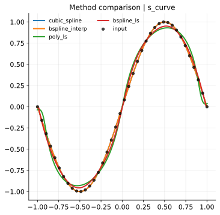
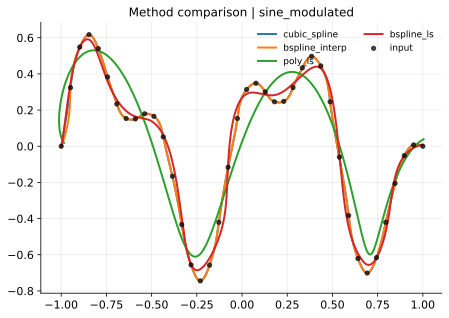
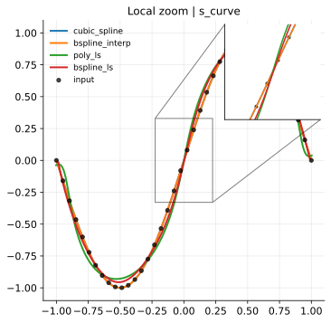
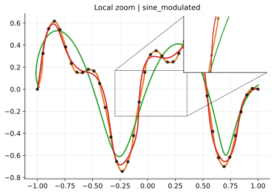
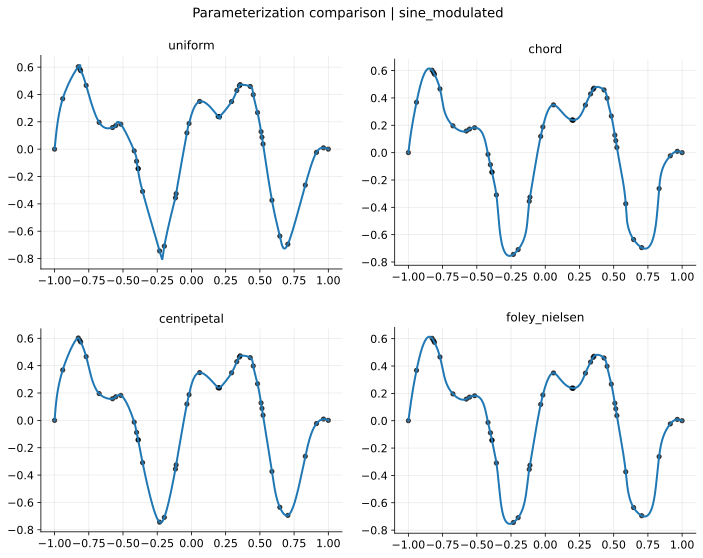
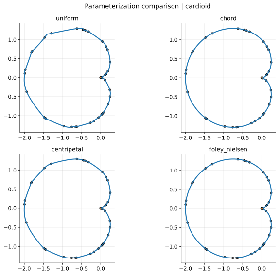
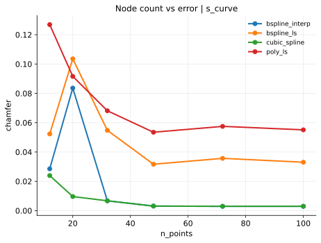
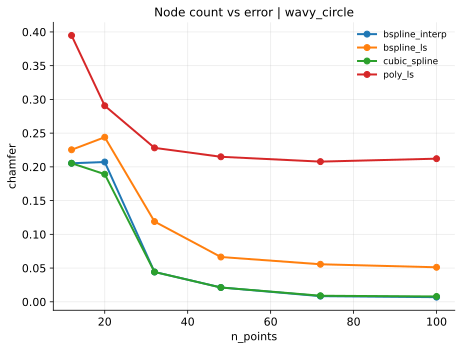
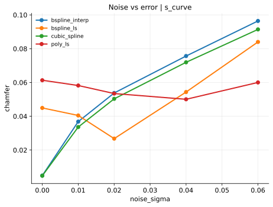
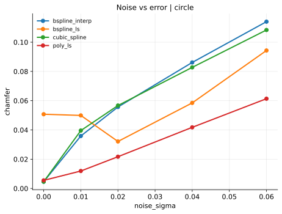
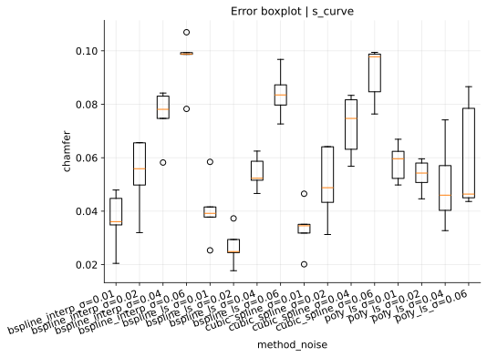
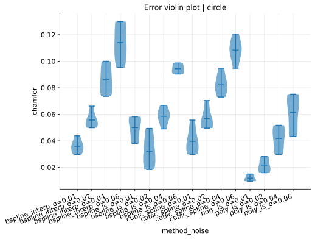
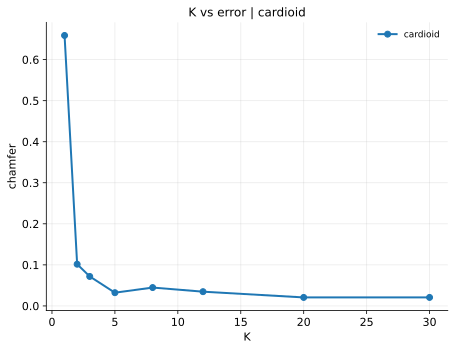
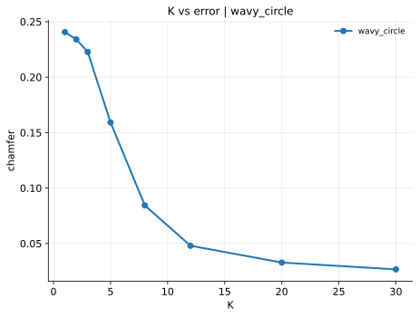
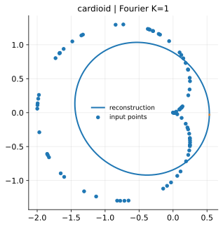
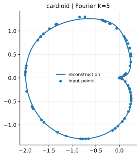
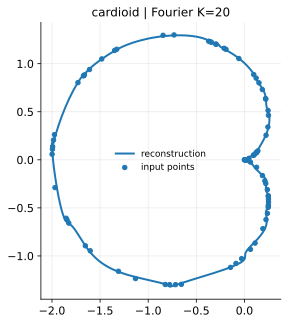
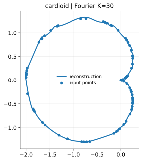
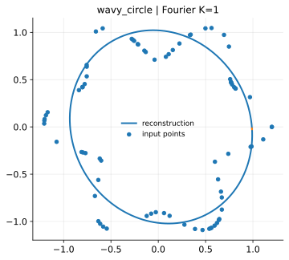
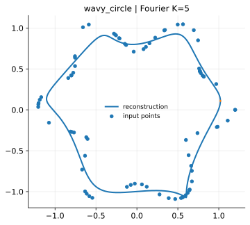
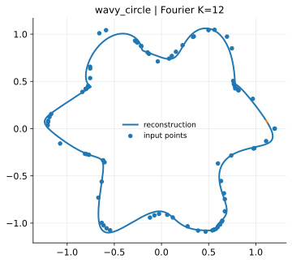
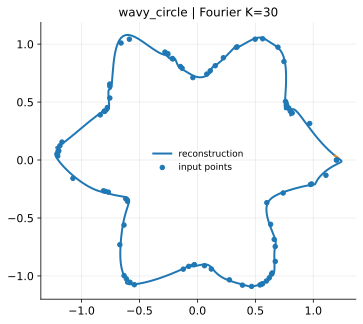
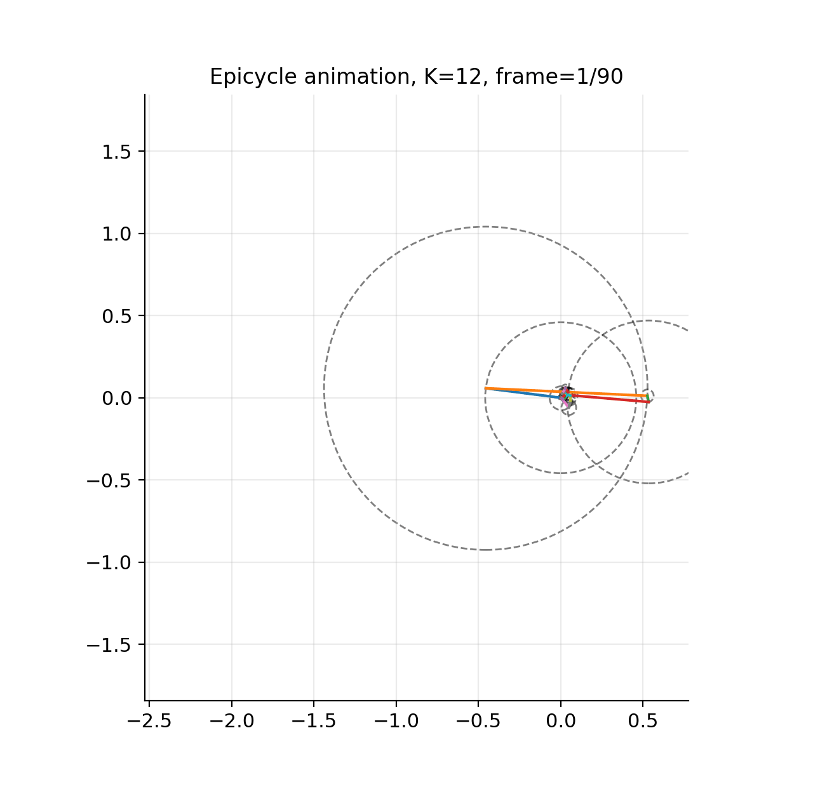
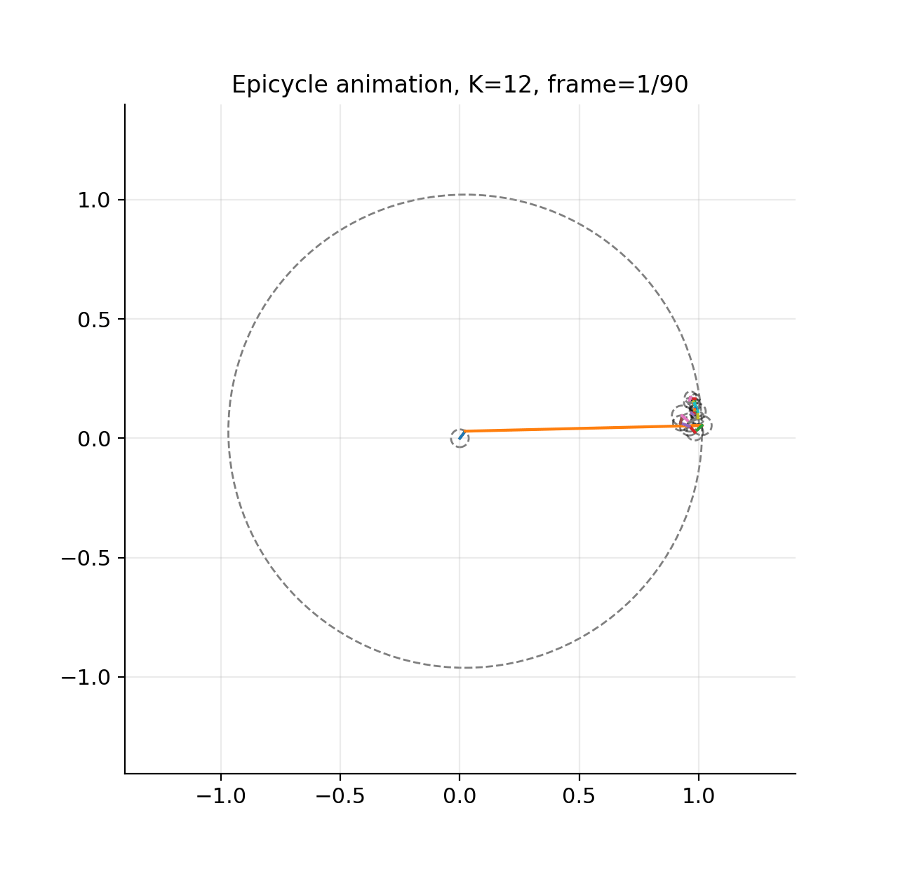
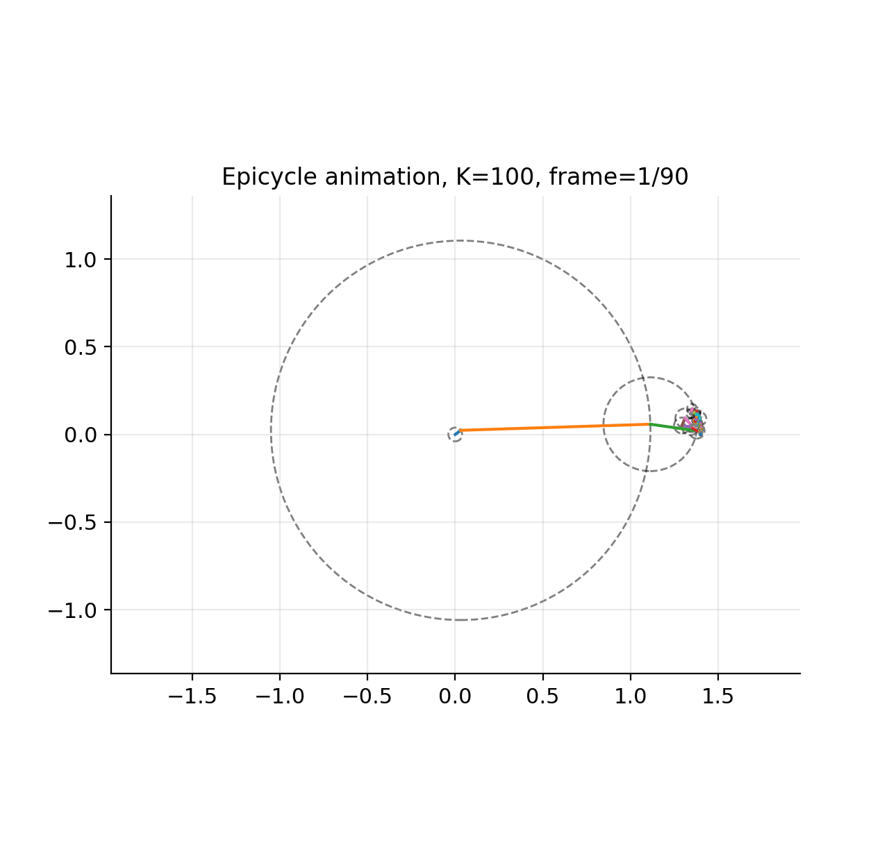
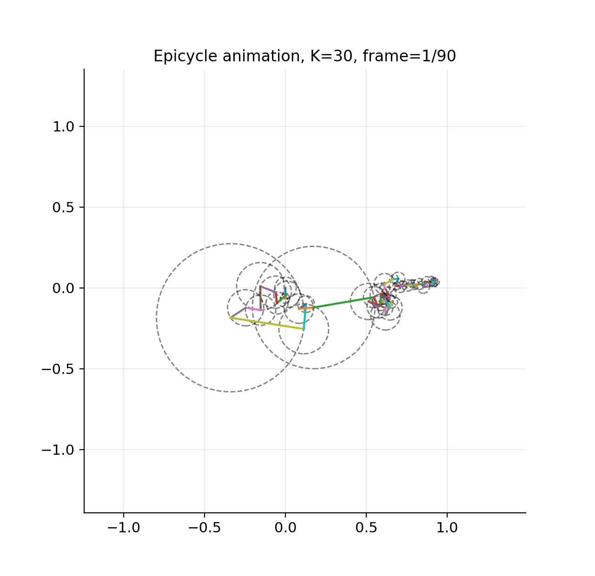
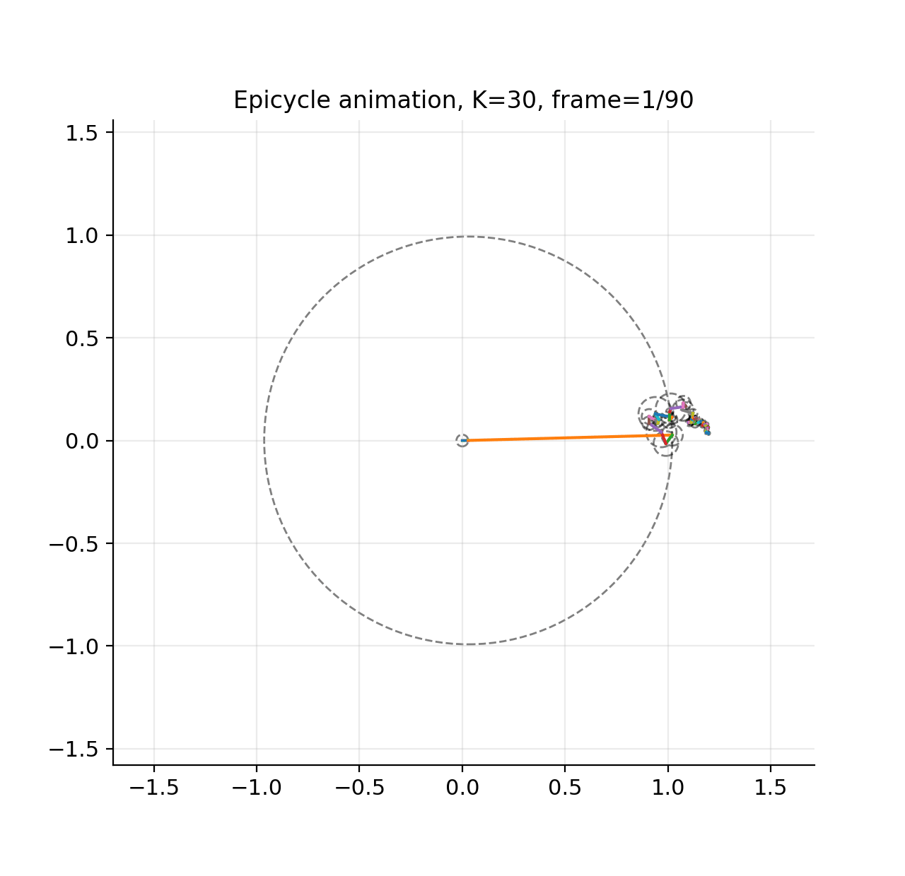
This interactive GUI reproduces the local Streamlit platform for planar curve fitting and Fourier visualization. You can explore the embedded app directly below, or open it in a separate tab for a larger workspace.